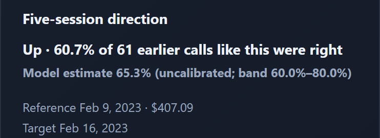
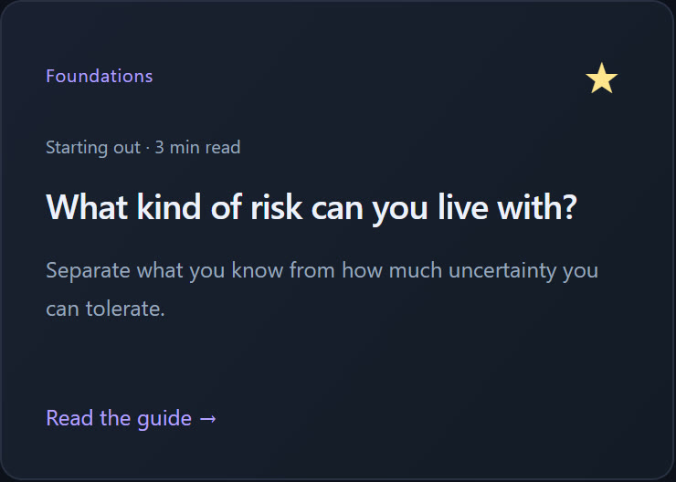
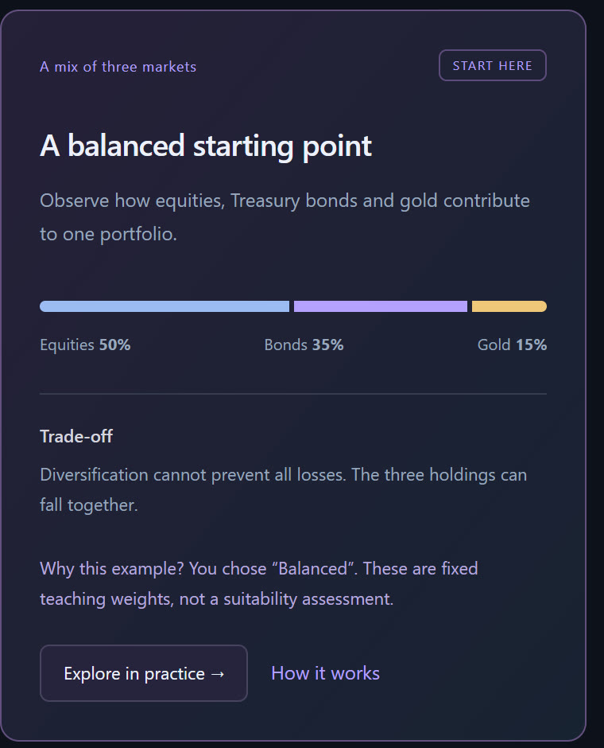
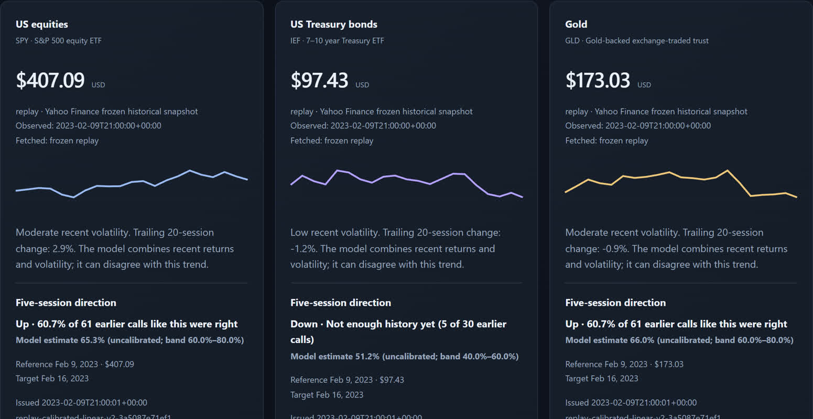
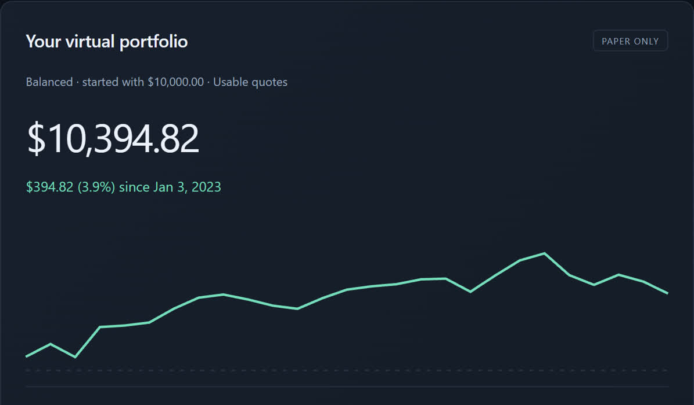
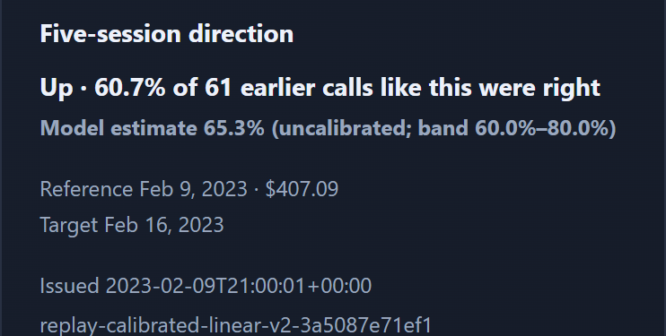

In MarketLens every call comes with its record.

1LearnShort guides: risk, buy & hold, rebalancing. Save them for later.

2Choose a portfolioThree mixes, each with its trade-off

3Practise on real pricesPast days, or today's prices from Yahoo Finance

4See what happened$10,000 virtual became $10,394.82 in 26 real days

Written down before the outcome. Never rewritten.
bugs I planted on purpose.
My 51 tests caught every one.
Keep tweaking until something wins, and something will, by luck. So the measurement became the product.
Prices hidden after the day you see.
Same rules, same days, against “always guess up”.
You become one more contender, and find out how good your gut really is.
And check the record before you trust a tip.
Free · runs on your computer · no account